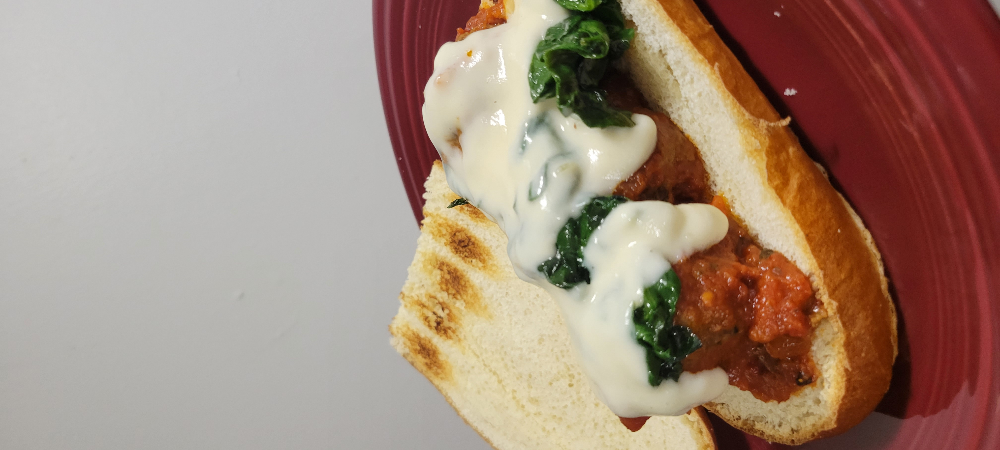

Flavor PACKED Meatballs

Description
These are the best meatballs I've ever had! They are savory, sweet, and a little spicy. it's a flavor explosion with every bite!
Ingredients
- 1 pound extra lean ground beef (87% lean or higher)
- 1/2 teaspoon sea salt
- 1 small onion (diced)
- 1/2 teaspoon garlic salt
- 1 1/2 teaspoons of Italian seasoning
- 3/4 teaspoon dried oregano
- 3/4 teaspoon crushed red pepper flakes
- 1 dash hot pepper sauce (I use Frank's)
- 1 1/2 tablespoons Worcestershire sauce
- 1/3 cup skim milk
- 1/4 cup grated Parmesan cheese
- 1/2 cup seasoned bread crumbs
Steps
- Preheat an oven to 400 degrees F (200 degrees C)
- Place the beef into a mixing bowl, and season with salt, onion, garlic salt, Italian seasoning, oregano, red pepper flakes, hot pepper sauce, and Worcestershire sauce; mix well. Add the milk, Parmesan cheese, and bread crumbs. Mix until evenly blended, then form into 1 1/2-inch meatballs, and place onto a baking sheet.
- Bake in the preheated oven until no longer pink in the center, 20 to 25 minutes.
- all done! serve with your favorite sauce on pasta or in a sandwich. Enjoy!